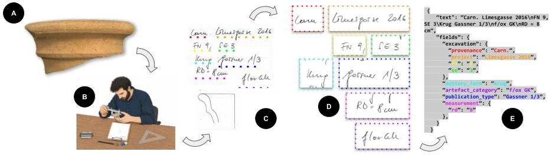

HERITAGE SCIENCE AUSTRIA 2.0
LEGION
machine LEarninG-enabled Identification of archaeological Objects in the middle daNube river basin.
Decoding the history of Roman Carnuntum through automated classification of common ware pottery using cutting-edge Machine Learning.
EXPLORE PROJECTProject News
September 2026
CENTURIA Dataset & Paper Released
We are proud to announce the official open-access release of the CENTURIA benchmark dataset on GitHub, accompanied by our first research paper, "OCR-Based Field Extraction for Archaeological Pottery Metadata: The CENTURIA Dataset" (arXiv:2608.30616). CENTURIA provides 507 retro-digitised Roman pottery drawings from Carnuntum with comprehensive handwritten text transcriptions, bounding boxes, and field-level metadata across seven categories. Evaluated across five document OCR models, we demonstrate that expert-validated LoRA fine-tuning reduces transcription error to <1.5% and achieves over 87% field extraction accuracy.
8–12 September 2026
LEGION @ ECCV 2026
The LEGION project will be strongly represented at the European Conference on Computer Vision (ECCV 2026) in Malmö, Sweden. Our team contributes with multiple joint papers and presentations across specialized tracks—including WiCV and VISART VIII—introducing our automated classification workflows and the new CENTURIA archaeological pottery benchmark dataset.
9 September 2026
WiCV @ ECCV 2026
We are delighted that Master's student Gissu Valentina Naghavi (corresponding author, supervised by Martin Kampel and Irene Ballester) is presenting our joint paper, "OCR-Based Field Extraction for Archaeological Pottery Metadata: The CENTURIA Dataset" (co-authored with Dominik Hagmann, Martin Kampel, and Irene Ballester), at the renowned Women in Computer Vision workshop (WiCV @ ECCV 2026) in Malmö, Sweden. Valentina will showcase our automated metadata extraction pipelines, celebrating impactful contributions of female researchers in computer vision.
8 September 2026
VISART VIII @ ECCV 2026
At the 8th Workshop on Vision for Art and Culture (VISART VIII @ ECCV 2026) in Malmö, Sweden (8 September 2026, 13:45–18:00), Gissu Valentina Naghavi (corresponding author, supervised by Martin Kampel and Irene Ballester) will present our joint research, "OCR-Based Field Extraction for Archaeological Pottery Metadata: The CENTURIA Dataset" (co-authored with Dominik Hagmann, Martin Kampel, and Irene Ballester). The contribution introduces an end-to-end OCR and metadata extraction workflow for Roman pottery drawings in the "Age of Image-Machines".
4 September 2026
LEGION Featured @ Heritage Science Austria
The national Heritage Science Austria research portal featured the LEGION project in a dedicated science report celebrating the milestone release of the open-access CENTURIA benchmark dataset and accompanying research paper (arXiv:2608.30616). The article highlights the fruitful interdisciplinary collaboration between the Austrian Archaeological Institute (OeAI / OeAW) and TU Wien's Computer Vision Lab (CVL), our upcoming presentations at ECCV 2026 (WiCV and VISART VIII), and our overarching mission to automate Roman pottery classification using Artificial Intelligence.
August 2026
Student Volunteers: Antonia & Rebekka
A huge thank you to our dedicated student volunteers, Antonia Schmid and Rebekka Lederhofer, who provided outstanding support to the LEGION project throughout August 2026! Embracing our Human-in-the-Loop (HITL) and Explainable AI (XAI) workflows, they worked with open-source tools such as PyPotteryScan to annotate, segment, and curate archaeological metadata for hundreds of Roman pottery drawings from Carnuntum. In addition to their digital work, an excursion to the Roman City of Carnuntum and hands-on insights into the Archaeological Central Depot of Lower Austria (Landessammlungen NÖ) in Hainburg provided valuable direct context to the ceramic material. Their efforts play a crucial role in enhancing our benchmark dataset and refining our automated classification models.
18 August 2026
LEGION Featured @ DiePresse
Austrian national daily newspaper DiePresse featured the LEGION project in an in-depth science report exploring how various current research activities bring the Roman heritage of Carnuntum to life.

30 June 2026
Excursion: LEGION @ Carnuntum
The LEGION project team went on a field trip to the Roman City of Carnuntum and visited the Archaeological Central Depot at Kulturfabrik Hainburg. Guided by Christian Gugl, the team gained valuable insights into ancient urban structures and extensive artifact repositories. We would like to express our sincere gratitude for the generous support from the Lower Austrian State Collections (Landessammlungen NÖ), the Center for Museum Collections Management at the University for Continuing Education Krems (UWK), and the Roman City of Carnuntum.
22 June 2026
Data Science & AI Day 2026
Our student assistant Julia Tanzer presented her ongoing Data Analysis Project (supervised by Dominik Hagmann), "Structuring Archaeological Find Drawings from Carnuntum (Austria): Ontology Building and Controlled Vocabulary within the LEGION project", at the Data Science & AI Day 2026 hosted by the University of Vienna.

17 June 2026
Austria Joins E-RIHS
Austria has officially joined the European Research Infrastructure for Heritage Science (E-RIHS ERIC). Coordinated by the Austrian Archaeological Institute (OeAI / OeAW) through E-RIHS.at, this milestone strengthens international research cooperation and access to state-of-the-art facilities for cultural heritage preservation.

15 June 2026
AI Factory Austria AI:AT
A delegation from the Austrian Academy of Sciences (OeAW), including the LEGION project, visited the AI Factory Austria AI:AT in Vienna to explore collaboration opportunities. The visit focused on EuroHPC access, AI services, and research synergies with startups.

22 May 2026
Workshop: Digital Frontiers
Dominik Hagmann presented "Reflections on AI Applications in Austrian Roman Archaeology" at the Digital Frontiers workshop, highlighting LEGION's Human-in-the-Loop approach, legacy data digitization, and the transparent, ethical use of Generative AI.

21 May 2026
LEGION @ RAC/TRAC 2026
Dominik Hagmann presented our latest research at the joint Roman Archaeology Conference & Theoretical Roman Archaeology Conference (RAC/TRAC 2026) at Aarhus University, Denmark.

11 May 2026
MLA2S Networking Seminar
Dominik Hagmann and Irene Ballester-Campos presented LEGION at the 9th Networking Seminar of the MLA2S platform, highlighting AI-enabled identification of archaeological objects from Carnuntum.

7 April 2026
MAIA General Meeting
Dominik Hagmann hosted the Second General Meeting of the MAIA COST Action in Hainburg, focusing on managing AI in archaeological research through interdisciplinary collaboration.
7 April 2026
Poster Exhibition @ Central Depot
Announcement of the permanent LEGION poster exhibition ("Rebuilding Roman History with AI") at the Archaeological Central Depot of the Lower Austrian State Collections (Landessammlungen NÖ) in the Kulturfabrik Hainburg, showcasing our AI research and pottery digitization directly where thousands of Roman artifacts are stored.
Spring 2026
Announcement: First Data Release
Early project announcement regarding the upcoming release of digitised archaeological drawings from Carnuntum. Full benchmark dataset and evaluation pipeline have now been officially published as the CENTURIA dataset.
21 January 2026
Master's Thesis Topic @ CVL
TU Wien's Computer Vision Lab advertised a Master's thesis topic on Feature Learning and Clustering for Archaeological Pottery Typology within the LEGION project, supervised by Martin Kampel and Irene Ballester. The thesis develops Machine Learning pipelines for 70,000+ Roman pottery drawings from Carnuntum, successfully bringing Master's students Anna Laczkó and Valentina Naghavi onto the team to advance our automated typochronology.
Fragmented Knowledge & Data Overload
The Manual Bottleneck
Traditional classification of everyday ceramics is too slow for massive, fragmented archaeological datasets. Huge amounts of data remain unassessed.
Untapped Data Points
Tens of thousands of technical 2D find drawings remain unclassified and unintegrated due to the sheer volume of material.
Some finds are more equal than other finds
Funding for mass finds is often restricted. Automated solutions are required to bridge this gap.
AI-Enabled Archaeology
LEGION introduces a Semi-supervised Computer Vision Pipeline leveraging thousands of historical documents for deep material insight.

Hybrid Data Input
Processing over 70,000 2D drawings alongside their comprehensive archaeological metadata.

Human-in-the-Loop (HITL)
eXplainable AI (XAI) ensures results are validated by experts to remain archaeologically robust.

Open Source Integration
Fully open-source solutions hosted on GitHub, ensuring long-term accessibility and transparency for the global research community.
New Socio-Economic Insights & AI Tools

Local Production & Trade
Revealing complex patterns in local production and tracking trade trends across the entire Middle Danube River Basin.

New Typochronology
Establishing a completely new, data-driven typochronology of Roman Common Ware based on large scale analysis.

Free & Open-Source Classification Tool
A user-friendly, open-source tool built for rapid, automated typochronological dating with >90% classification accuracy.
Open-Source Ecosystem & Research
LEGION is committed to Open Science, FAIR and CARE principles, and Reproducible AI. All developed machine learning pipelines, benchmark datasets, web platforms, and research findings are released openly for the global archaeological and computer vision communities.
CENTURIA Dataset & Pipeline

The CENTURIA benchmark provides 507 retro-digitised Roman pottery documentation records from Carnuntum, complete with handwritten text ground truth, bounding boxes, and structured field labels across 7 metadata categories (provenance, project, find number, stratigraphic unit, pottery form, fabric, publication type, and rim diameter). Evaluates 5 state-of-the-art OCR models and provides LoRA fine-tuning workflows achieving >87% extraction accuracy.
OCR-Based Field Extraction for Archaeological Pottery Metadata: The CENTURIA Dataset

Published on arXiv and presented at the Women in Computer Vision (WiCV) and Vision for Art and Culture (VISART VIII) workshops at the European Conference on Computer Vision (ECCV 2026) in Malmö, Sweden. This paper introduces the first domain-specific benchmark and lightweight LoRA fine-tuning strategy to bridge the substantial domain gap in document analysis models for retro-digitised archaeological pottery records.
BibTeX Citation ▼
@misc{naghavi2026centuria,
title={OCR-Based Field Extraction for Archaeological Pottery Metadata: The CENTURIA Dataset},
author={Naghavi, Gissu Valentina and Hagmann, Dominik and Kampel, Martin and Ballester, Irene},
year={2026},
eprint={2608.30616},
archivePrefix={arXiv},
primaryClass={cs.CV},
doi={10.48550/arXiv.2608.30616},
url={https://arxiv.org/abs/2608.30616}
}
Experts Behind LEGION
The LEGION project is a multi-disciplinary collaboration bridging the gap between archaeological expertise and advanced computational methods.
We are always looking for collaboration and feedback. Reach out to the project lead for inquiries regarding data, methodology, or partnership opportunities.